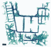
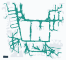
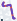

当前数据概况
当前路线3,5161 个场景
视频总量28.75 h按实际帧数及帧率
参考均分9.83/10沿用筛选前评分
长度中位数20.7 mP95 39.7 米
30 米以上775最长 51.3 米
这批路线覆盖完整可通行网格的 93.83%（按 0.30 米机器人半径膨胀）；775 条超过 30 米。严格同向近重复为 4 对。含停转的区间均速为 0.739 米/秒，超过本批 2 米/秒约束 1% 容差的区间为 0 个。
参考分最低值仍是自动口径，不代表人工通过率。下面的范围上沿样例用于观察边界，不产生新的黑名单。
本轮筛除摘要
| 范围 | 路线数 | 视频小时 |
|---|
| 筛选前完成集 | 4,008 | 33.0217 |
| 本轮去重排除 | 492 | 4.2686 |
| 当前保留集 | 3,516 | 28.7531 |
质量分低于 8 的路线与既有可疑队列按 ID 取并集排除；统计、示例与动作编码均只使用剩余数据。
使用相同完整地图分母，轨迹膨胀覆盖从 94.628% 降至 93.832%，减少 0.797 个百分点，约 10.188 平方米。这是删样后的覆盖代价；后续地图与统计仅展示当前保留集。
下载动作编码后的完整数据清单。路线、视频、Planner 记录和动作编码均对应同一批保留 ID。
查看本轮删除依据与数量
原因可以重叠，以下条数不能直接相加；这些决定仅适用于本轮冻结清单。
| 原因 | 命中条数 |
|---|
| 质量分低于 8 | 119 |
| 既有可疑队列 | 390 |
| 两类重合 | 17 |
| 去重后排除 | 492 |
查看被排除路线的可疑线索
同一条路线可能命中多个线索。低对比可能来自白墙或近景，近停可能发生在正常转弯；这里执行的是偏严格筛选，不将代理指标等同于人眼确认的异常。
| 线索 | 涉及路线 |
|---|
| 补充抽帧低对比：可能近墙或纯色近景，需看片 | 203 条 |
| 接近现行末段指标边界 | 133 条 |
| 单位距离内多次近停：需区分正常弯道减速 | 83 条 |
| 场景与长度分层内相对低分样例（并非确认异常） | 32 条 |
当前数据的实际速度
累计行驶 75.16 千米；含停转的时间加权均速 0.739 米/秒，移动时均速 0.889 米/秒，最高区间速度 2.000 米/秒。速度≤0.05 米/秒占时长 17.04%。
仅本报告保留集的 203,506 个相邻位姿区间。速度由水平位移除以时间得到，不是瞬时峰值；移动时均速只计速度 >0.05 米/秒的区间。近停不等于视频冻结。
速度区间的耗时与路程
横轴单位为米/秒，各档左开右闭。时间和距离分别归一至100%；高速距离占比反映其实际承担的行程，不按达到过峰值的路线数替代。不同长度路线的均速
按水平路径长度分组，再按各组实际时长加权。各组条数：≤5米 183 条、5–15米 894 条、15–30米 1664 条、>30米 775 条。长路线不因长度单独扣分。较高速度承担的任务比例
三个阈值互相嵌套，不能相加。时间、距离与路线分别使用自己的分母，仅计算当前保留集。速度区间精确统计与下载
| 速度区间（米/秒） | 区间数 | 时间占比 | 距离占比 |
|---|
| ≤.01 | 29,068 | 14.284% | 0.020% |
| .01–.05 | 5,612 | 2.758% | 0.093% |
| .05–.2 | 10,267 | 5.045% | 0.771% |
| .2–.4 | 28,568 | 14.038% | 6.325% |
| .4–.6 | 27,274 | 13.402% | 8.953% |
| .6–.8 | 19,981 | 9.818% | 9.308% |
| .8–1 | 21,333 | 10.483% | 12.790% |
| 1–1.2 | 17,251 | 8.477% | 12.460% |
| 1.2–1.4 | 9,687 | 4.760% | 8.335% |
| 1.4–1.6 | 7,718 | 3.793% | 7.703% |
| 1.6–1.8 | 7,771 | 3.819% | 8.765% |
| 1.8–2 | 18,976 | 9.325% | 24.477% |
| >2 | 0 | 0.000% | 0.000% |
超过该路线实际速度约束 1% 容差的区间：0。这项区间速度检查不替代完整动力学约束，也不把较高速度本身视为异常。
当前路线的场景覆盖与重复
完整绑定 NavMesh 的 0.25 米网格；仅评价地图内可通行空间，不代表真实办公室总面积。 轨迹按本次实际机器人半径膨胀并裁剪到绑定 NavMesh；网格按真实表面高度分开，0.5 米高度匹配容差。实际半径逐场景读取合同并核验，不把预膨胀 NavMesh 的 Recast 半径当作机器人半径。
| 场景 | 可通行网格面积 | 轨迹膨胀覆盖 | 1 米附近到访覆盖 | 同向近重复对 |
|---|
| 深圳办公室 | 1278.69 m² | 93.83% | 98.69% | 4 |
当前保留集的面积加权轨迹膨胀覆盖为 93.83%，周边 1 米到访覆盖为 98.69%。地图分母保持完整可通行区域，不因删掉路线而缩小；两种半径表达不同的利用尺度。
深圳办公室：过滤后覆盖 93.83%。仅使用当前保留集；子集展示不是最优选样或新的过滤方案。
深圳办公室：过滤后通道使用频次；颜色越深，经过的不同轨迹越多。仅使用当前保留集；子集展示不是最优选样或新的过滤方案。
深圳办公室：固定顺序取 176 条（5%），覆盖 53.20%。仅使用当前保留集；子集展示不是最优选样或新的过滤方案。深圳办公室：固定顺序取 879 条（25%），覆盖 79.72%。仅使用当前保留集；子集展示不是最优选样或新的过滤方案。深圳办公室：固定顺序取 1758 条（50%），覆盖 87.65%。仅使用当前保留集；子集展示不是最优选样或新的过滤方案。 共享走廊不等于整条路线重复
当前共有 4 对同向近重复，其中 1 对目标物相同。判定同时要求：同向起终点各≤0.5米、长度比≥0.9、膨胀通道 IoU≥80%、短路线包含率≥90%、进度对应点 P95 距离≤0.35米。这里只展示复核证据，没有追加去重或扩大删样。
深圳办公室 · 同向近重复：通道 IoU 89.3%，较短路线包含率 94.3%，沿程对应点 P95 距离 0.19 米。目标物不同，不能仅因路径重合视为相同任务。深圳办公室 · 同向近重复：通道 IoU 87.5%，较短路线包含率 93.9%，沿程对应点 P95 距离 0.26 米。目标物不同，不能仅因路径重合视为相同任务。深圳办公室 · 同向近重复：通道 IoU 86.7%，较短路线包含率 92.9%，沿程对应点 P95 距离 0.27 米。目标物相同。深圳办公室 · 接近阈值但不算重复：通道 IoU 80.7%，较短路线包含率 89.6%，沿程对应点 P95 距离 0.30 米。目标物不同，不能仅因路径重合视为相同任务。未计为重复的原因：包含率 89.6% < 90%。
深圳办公室 · 接近阈值但不算重复：通道 IoU 80.2%，较短路线包含率 89.0%，沿程对应点 P95 距离 0.34 米。目标物相同。未计为重复的原因：包含率 89.0% < 90%。深圳办公室 · 接近阈值但不算重复：通道 IoU 85.4%，较短路线包含率 93.8%，沿程对应点 P95 距离 0.38 米。目标物不同，不能仅因路径重合视为相同任务。未计为重复的原因：沿程 P95 距离 0.376 米 > 0.35 米。 质量与检查边界
当前路线对应首中末 10,548 帧正式检查、约 1 Hz 的 106,138 帧补充检查；正式解码失败 0 条，补充解码失败 0 条。重点抽帧复核涉及当前保留集 0 条，不扩大为全量逐条看片结论。
| 现行条件 | 当前最大值 | 命中条数 |
|---|
| 三帧抽检最大连片近黑区域 >10% | 3.168 % | 0 |
| 扩展末段左右抵消 >10° | 4.728 ° | 0 |
| 扩展末段累计转向 >95° | 74.903 ° | 0 |
| 最后 2 秒净转向 >180° | 54.118 ° | 0 |
| 末 5 秒相机夹角 >45° 累计 ≥1秒（速度 >0.05m/s） | 0.000 秒 | 0 |
扩展末段取最后 2 秒与最后 1 米中较长的一段；累计转角不等于瞬时急转。左右抵消按累计绝对转角减去净转角绝对值计算，转向之间的平移不重置累计。相机夹角使用实际光轴外参，只统计移动中的偏离。
当前保留集参考评分（0–10）
均分 9.828，最低 9.09，最高 10.00。分数沿用筛选前的同一公式，没有按保留集重新拉伸；按这些指标选样之后分布变高属于筛选结果，不能独立证明真实质量提升。异常召回率和误杀率没有全量人工真值支撑，仍不提供伪精确数值。已删除本轮全部疑点，并不意味着每条剩余视频都经过人工观看；后续随机抽查仍可发现指标未覆盖的问题。
正常候选与当前范围上沿
样例全部来自当前白名单：包含短、中、中长、长路线，以及保留集末段转角、抵消和速度较高的边界。边界代表当前分布上沿，不等于新增异常分类。默认 4 倍速，可选 8 倍速及最后 10 秒。
正常候选 · 短路线
深圳办公室 · kitchen · 参考分 10.00/10
路径 4.5 米视频 11.5 秒
末段抵消 0.00°末段累计转向 26.9°
末 2 秒净转向 12.4°末 5 秒视野偏离 0.0 秒
Navigate to the kitchen.
未触发现行过滤和疑点指标，作为同场景、不同长度的正常候选对照；未做逐条人工验收。
数据编号与评分依据
example-01无额外扣分线索
深圳办公室 · office · 参考分 10.00/10
路径 14.4 米视频 13.5 秒
末段抵消 0.00°末段累计转向 10.4°
末 2 秒净转向 10.4°末 5 秒视野偏离 0.0 秒
Navigate to the office.
未触发现行过滤和疑点指标，作为同场景、不同长度的正常候选对照；未做逐条人工验收。
数据编号与评分依据
example-02无额外扣分线索
深圳办公室 · kitchen · 参考分 10.00/10
路径 29.8 米视频 36.0 秒
末段抵消 0.00°末段累计转向 0.0°
末 2 秒净转向 0.0°末 5 秒视野偏离 0.0 秒
Navigate to the kitchen.
未触发现行过滤和疑点指标，作为同场景、不同长度的正常候选对照；未做逐条人工验收。
数据编号与评分依据
example-03无额外扣分线索
深圳办公室 · office · 参考分 10.00/10
路径 46.1 米视频 52.5 秒
末段抵消 0.00°末段累计转向 0.0°
末 2 秒净转向 0.0°末 5 秒视野偏离 0.0 秒
Navigate to the office.
未触发现行过滤和疑点指标，作为同场景、不同长度的正常候选对照；未做逐条人工验收。
数据编号与评分依据
example-04无额外扣分线索
深圳办公室 · desk · 参考分 9.09/10
路径 23.5 米视频 29.0 秒
末段抵消 4.73°末段累计转向 65.9°
末 2 秒净转向 2.4°末 5 秒视野偏离 0.0 秒
Navigate to the desk.
未触发现行过滤和疑点指标，作为同场景、不同长度的正常候选对照；未做逐条人工验收。
数据编号与评分依据
example-05末段左右调整较多；末段转向较集中
深圳办公室 · desk · 参考分 9.44/10
路径 24.5 米视频 45.5 秒
末段抵消 0.00°末段累计转向 74.9°
末 2 秒净转向 0.0°末 5 秒视野偏离 0.0 秒
Navigate to the desk.
未触发现行过滤和疑点指标，作为同场景、不同长度的正常候选对照；未做逐条人工验收。
数据编号与评分依据
example-06末段转向较集中
深圳办公室 · door · 参考分 9.72/10
路径 20.1 米视频 20.0 秒
末段抵消 0.00°末段累计转向 44.4°
末 2 秒净转向 4.9°末 5 秒视野偏离 0.0 秒
Navigate to the door.
未触发现行过滤和疑点指标，作为同场景、不同长度的正常候选对照；未做逐条人工验收。
数据编号与评分依据
example-07无额外扣分线索
口径与复用
冻结采集文件未修改。本页统计分母均为当前白名单；仅“筛除摘要”保留筛选前后的对照。运动和视频指标使用本批源文件的实测结果，空间覆盖按白名单重算，地图分母不变。
参考评分按运动 30%、末段动作 30%、视频 25%、目标证据 15% 加权。筛选后没有重新拉伸分数或追加新阈值。原始语义预检不等于最终 RGB 画面的逐条人工确认。
完整范围统计 → · 逐轨迹评分明细仅限内网访问 · 筛选口径与证据路径 JSON